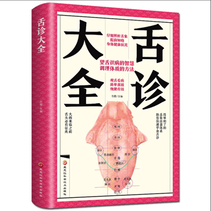
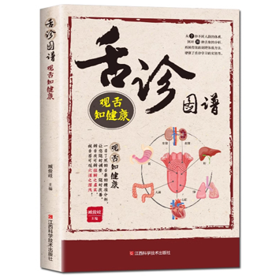
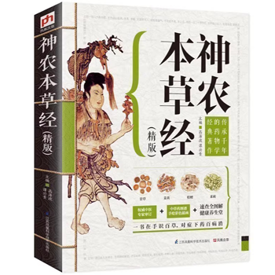
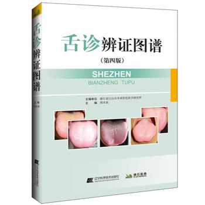

疾病大全
中医常识
查看更多
中医保健
查看更多
中医特色
- 针刺加贴代温灸膏治上肢麻木62例
- 铍针加代温灸膏治疗腰肌劳损
- 教你几招找准穴位
- 针刺治疗鹅足腱滑囊炎一例
- 辨三经针治落枕
- 醒脑调衡针刀治疗脑卒中痉挛性偏瘫临床观察
- 针灸调治尿失禁
- 面瘫分期针刺治疗
- 面瘫分期针刺治疗
- 针刺三穴改善甲状腺功能[图]
- 以哑门、扶突、环跳穴为主穴，针刺治疗中风后遗症
- 针刺加贴代温灸膏治疗面瘫80例
- 针刺内关穴治疗忧思证
- 针灸治疗落枕
- 黄帝内针治疗偏头痛
- 针灸治疗落枕一例
中医特色--中医针灸
- 常用山茶花验方
- 常用甘松经验方
- 常用博落回验方
- 宣通鼻窍治过敏性鼻炎验方
- 莪术治病验方
- 臭梧桐临证验方
- 艾叶香附缓解盆腔炎
- 杠板归治病验方
- 治小儿口疮验方
- 萝藦治病验方
- 梨的医用验方
- 治腰椎管狭窄症验方
- 治疗慢性副鼻窦炎方剂举隅
- 萹蓄治病方
- 藿香治病方
- 治牙本质过敏方
中医特色--偏方秘方
- 拔罐三联疗法治疗抑郁症
- “刺络拔罐”治疗三角肌损伤
- 有人说拔罐会“伤元气”，这是真的吗？
- 平衡罐治肩周炎
- 平衡火罐解除腰背痛
- 拔火罐禁忌与注意事项
- 确保拔罐安全的四大步骤
- 岔气的拔罐疗法
- 糖尿病拔罐疗法
- 失眠拔罐疗法
- 咳嗽拔罐疗法
- 便秘拔罐疗法
- 高血压拔罐疗法
- 耳聋拔罐疗法
- 腹泻拔罐疗法
- 不育拔罐疗法
中医特色--中医拔罐
- 膏方滋补虽然好，制作服用有技巧
- 冬季膏方怎么补？饮食减咸与增苦
- 代温灸膏治疗脾胃虚寒型泄泻的临床观察
- 冬日“膏方”进补效果好 服用“注意事项”不能忘
- 五月入夏桑葚甜 熬成膏方补肾肝
- 一勺膏方十碗药
- 防雾霾中医膏方
- 补虚调理话膏方
- 冬令补肾膏方最适宜
- 真菊延龄膏明目保健
- 两款秋季美颜膏
- 抗衰养颜玉竹蜜膏
- 治咳嗽药膏方
- 又到膏方进补时 五类人群最适宜
- 中药膏外敷治跟骨骨刺
- 膏方进补养生夏季也适宜
中医特色--中医膏药
查看更多
中医书籍
- 
- 
- 
- 